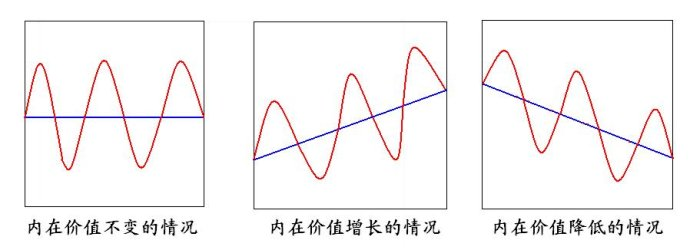
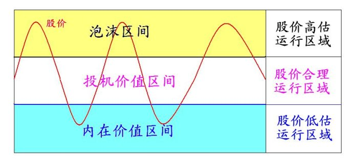

第119篇•教你炒股系列31：左侧挖掘牛股的方法（3）
谷为陵
股票买卖只有两种方法：一是左侧交易，即在股价下跌的时候逢低吸纳；二是右侧交易，即在股价上涨的时候追涨买入。这两种方法运用的是不同的投资理论，左侧交易运用是内在价值理论，而右侧交易运用是空中楼阁理论。
内在价值理论认为，在股票内部存在一个坚实的内在价值，从长期来看，股价是围绕内在价值波动的，当股价高于内在价值时，股价就处于高估状态，是卖出时机，而当股价低于内在价值时，股价就处于低估状态，是买入时机。因股价围绕内在价值波动，所以，在股价跌破内在价值后，必定会在其后的某个时间重新回到内在价值之上，这个过程被称为“市场纠错”。于是，买入跌破内在价值的股票就是一种只赔时间而不赔钱的、稳健的投资方法，而该方法就是我们熟知的价值投资方法。所以，左侧交易成功的关键就是要等到股价跌到内在价值附近，当然，最好是跌破内在价值时再买入。
内在价值理论的核心，就是提出了股价是围绕内在价值波动的观点。由于内在价值本身也是变化的，从某一个时间段来看，内在价值的变化可分为不变、增长与下降三种情况，股价围绕这三种内在价值运行的示意图如下，其中，图中红线为股价，蓝线为内在价值：

内在价值理论看起来很完美，逻辑上也讲得通，但是，该理论在实践中却遇到了很多问题。其中一个最重要的问题是，从长期来看，绝大多数股票的股价并不围绕内在价值波动，而是在内在价值之上波动，因为被低估的股票总是极少数的。这个现象在A股是非常典型的，即使是在大熊市末期，A股能够跌破内在价值的股票也是极少数的。这与内在价值理论推导出的股票总是围绕内在价值波动的结论是不相符合的，是矛盾的。
据我的观察和研究，从长期来看，股价确实在围绕一个“价值”波动，但这个价值不是内在价值，而是投机价值！
要正确解释股价与价值的相互关系，只能够运用我独创的“股票价值是其投资价值和投机价值之和”的新理论。我认为，股票的价值是非常复杂的，从本质上看，股票具有三个层次的“价值”区间以及对应的三个股价运行空间：一是内在价值区间，这是股价的低估运行区域，是投资的低风险或者说无风险区域；二是投机价值区间，这是股价的合理运行区域，是投资的正常风险区域；三是泡沫区间，这是股价的高估运行区域，是投资的高风险区域。股价运行与股票价值的关系示意图如下：

从上图可以看出，从长期来看，股价是围绕投机价值的中枢波动的，在投机价值区间，股价处于相对稳定的状态。只是在少数情况下，股价才会上冲到泡沫区间以及下破至内在价值区间，在这两个区间，股价处于极不稳定的状态。如，当股票被恶炒而股价严重高估时，股价在高位根本站不住，很快就会暴跌下来，从而脱离泡沫区间而进入到投机价值区间。再如，当股票因“被错杀”式暴跌而股价严重低估时，股价在低位也呆不住，很快就会反弹甚至反转上涨，从而脱离内在价值区间而进入到投机价值区间。当然，股价在被高估或者被低估后，并非每次都会很快被市场纠错而下跌或者上涨，市场纠错的时间有时候会很长，但纠错是肯定的，绝不会出现一只永远被高估的股票，那些曾经被炒到天上的大庄股最终无一例外的都进行了惨烈的价值回归，同样的，也绝不会出现一只永远被低估的股票，股票价格最终会回到其合理的水平。什么是合理水平？就是回到投机价值区间。
所以，我特意指出，在左侧挖掘牛股的时候，不要期待股价一定要跌破内在价值才开始买入，当股价跌到接近内在价值时就是很好的投资机会。因为，即使是极少数股票跌破内在价值的情况，在股市中都不多见，在A股几乎要平均5～8年才能遇到一次。巴菲特一辈子买过的股票估计不到100只，这些股票大部分都是在跌破内在价值时买的，但为了买这些股票，巴菲特总计花了60年时间，其中，为了等待适合的价格买入可口可乐，巴菲特一直等了37年，直到1987年10月美国股市发生大崩盘时才如愿买进。
（未完待续）